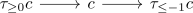
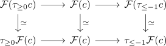
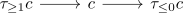

homotopy objects of the image of a t-exact functor depend only on the original homotopy objects
Proposition
Let $\mathcal{C}, \mathcal{D}$ be stable categories with a t-structure and $\mathcal{F}: \mathcal{C} \rightarrow \mathcal{D}$ a t-exact functor. Then for each object $c \in \mathcal{C}$, there exists an isomorphism
\begin{align*}
\pi_n(\mathcal{F}(c)) \simeq \mathcal{F}(\pi_n(c))
\end{align*}
Proof
We claim that there exists an isomorphism
\begin{align*}
\pi_0(\tau_{\geq 0} \mathcal{F}(c)) \rightarrow \pi_0(\mathcal{F}(c))
\end{align*}
This follows from the fiber sequence

which induces a fiber sequence

where the vertical equivalence come from t-exactness.
We may now apply the same argument for

which shows that the map
\begin{align*}
\pi_0(\mathcal{F}(c)) \rightarrow \pi_0(\mathcal{F}(\tau_{\leq 0} c))
\end{align*}
is also an isomorphism for arbitrary $c$. In particular setting $c$ as $\tau_{\geq 0} c$ shows that the zigzag
\begin{align*}
\pi_0(\mathcal{F}(c)) \rightarrow \pi_0(\mathcal{F}(\tau_{\leq 0} c)) \leftarrow \pi_0(\mathcal{F}(\tau_{\geq 0}(\tau_{\leq 0} c))) \simeq \pi_0(\mathcal{F}(\pi_0(c))
\end{align*}
consists purely of isomorphisms